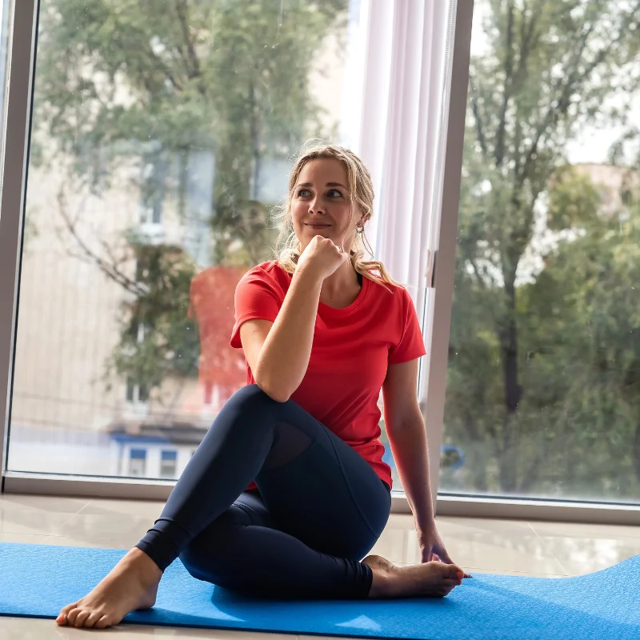

Bazální metabolismus: výpočet, vzorce a kalkulačka
Bazální metabolismus (BMR – Basal Metabolic Rate) je množství energie, které vaše tělo spotřebuje v absolutním klidu na udržení základních životních funkcí: dýchání, činnost srdce, mozku, jater, ledvin a udržení tělesné teploty. Tvoří 60–70 % vašeho celkového denního energetického výdeje – je to tedy s přehledem největší položka vašeho kalorického rozpočtu.
Znalost bazálního metabolismu je klíčová pro nastavení správného kalorického příjmu při hubnutí. Pokud jíte pod úroveň BMR, riskujete zpomalení metabolismu, ztrátu svalové hmoty a zdravotní problémy. V tomto článku vám ukážeme, jak si BMR vypočítat a jak ho využít v praxi.

Jak vypočítat bazální metabolismus
Existuje několik ověřených vzorců pro výpočet BMR. Nejpoužívanější jsou dva:
1. Mifflin-St Jeor (nejpřesnější pro většinu lidí)
Muži: BMR = 10 × váha (kg) + 6,25 × výška (cm) − 5 × věk + 5
Ženy: BMR = 10 × váha (kg) + 6,25 × výška (cm) − 5 × věk − 161
2. Harris-Benedict (revidovaný)
Muži: BMR = 88,362 + 13,397 × váha (kg) + 4,799 × výška (cm) − 5,677 × věk
Ženy: BMR = 447,593 + 9,247 × váha (kg) + 3,098 × výška (cm) − 4,330 × věk
Který vzorec použít?
Pro většinu lidí je Mifflin-St Jeor přesnější, zejména pro osoby s nadváhou nebo obezitou. Harris-Benedict má tendenci BMR mírně nadhodnocovat. Oba vzorce jsou ale dostatečně přesné pro orientační výpočet.
Příklady výpočtu
| Osoba | Mifflin-St Jeor | Harris-Benedict |
|---|---|---|
| Žena, 70 kg, 165 cm, 35 let | 1 376 kcal | 1 439 kcal |
| Muž, 85 kg, 180 cm, 40 let | 1 780 kcal | 1 841 kcal |
| Žena, 60 kg, 170 cm, 25 let | 1 338 kcal | 1 413 kcal |
| Muž, 100 kg, 175 cm, 50 let | 1 849 kcal | 1 934 kcal |
Od bazálního metabolismu k celkovému výdeji (TDEE)
BMR říká, kolik kalorií spalujete v absolutním klidu. Ale vy přece neleříte celý den v posteli. Proto potřebujete spočítat TDEE (Total Daily Energy Expenditure) – celkový denní energetický výdej, který zahrnuje i pohyb.
Výpočet TDEE
TDEE = BMR × koeficient aktivity
| Úroveň aktivity | Koeficient | Příklad |
|---|---|---|
| Sedavá | 1,2 | Kancelářská práce, minimum pohybu |
| Mírně aktivní | 1,375 | Lehké cvičení 1–3× týdně |
| Středně aktivní | 1,55 | Cvičení 3–5× týdně |
| Velmi aktivní | 1,725 | Intenzivní cvičení 6–7× týdně |
| Extrémně aktivní | 1,9 | Fyzicky náročná práce + trénink |
Příklad
Žena, 70 kg, 165 cm, 35 let, středně aktivní:
- BMR (Mifflin-St Jeor) = 1 376 kcal
- TDEE = 1 376 × 1,55 = 2 133 kcal
- Pro hubnutí (deficit 400 kcal) = ~1 730 kcal denně
Podrobněji o nastavení kalorického deficitu se dočtete v článku o počítání kalorií při hubnutí.
Jak zvýšit bazální metabolismus
Bazální metabolismus můžete do určité míry ovlivnit. Hlavní pákou je složení těla – čím více svalové hmoty máte, tím vyšší je váš BMR.
Ověřené způsoby
- Silový trénink – buduje svalovou hmotu, která spaluje energii i v klidu. Každý kg svalů navíc = ~13 kcal/den navíc. Více v článku o metabolismu.
- Dostatečný příjem bílkovin – bílkoviny mají termický efekt 20–30 % (tělo spotřebuje energii na jejich trávení) a chrání svaly při hubnutí.
- Nepodkračujte BMR – pokud jíte méně kalorií, než je váš bazální metabolismus, tělo přepne do „úsporného režimu" a metabolismus zpomalí.
- Kvalitní spánek – 7–9 hodin. Nedostatek spánku snižuje BMR i leptin (hormon sytosti).
- Zvyšujte NEAT – denní pohyb mimo trénink (chůze, schody, stání) zvyšuje celkový výdej, i když přímo nemění BMR.
Bazální metabolismus a hubnutí
Pochopení BMR je pro hubnutí zásadní. Zde jsou klíčové zásady:
Nikdy nejezte pod BMR
Váš kalorický příjem při hubnutí by neměl klesnout pod hodnotu bazálního metabolismu. Pod touto hranicí tělo:
- Zpomaluje metabolismus (adaptivní termogeneze)
- Spaluje svalovou hmotu místo tuku
- Zvyšuje chuť k jídlu a hladinu ghrelinu
- Zvyšuje riziko jo-jo efektu
Správné nastavení kalorického deficitu
| Parametr | Doporučení |
|---|---|
| Minimální příjem | Nikdy pod BMR (obvykle 1 200–1 500 kcal u žen, 1 500–1 800 u mužů) |
| Deficit | 300–500 kcal pod TDEE |
| Tempo hubnutí | 0,5–1 kg týdně |
| Bílkoviny | 1,2–2 g/kg hmotnosti denně |
Proč se váha zastaví
Při hubnutí klesá vaše hmotnost – a s ní i BMR. Tělo lehčího člověka prostě potřebuje méně energie. Proto se hubnutí postupně zpomaluje a je nutné buď mírně snížit příjem, nebo zvýšit pohyb. Přepočítávejte si BMR přibližně každých 5 kg.
Shrnutí
- Bazální metabolismus (BMR) = energie na udržení života v klidu = 60–70 % celkového výdeje
- Nejpřesnější vzorec: Mifflin-St Jeor
- TDEE = BMR × koeficient aktivity → základ pro nastavení kalorického příjmu
- Při hubnutí nikdy nejezte pod BMR
- BMR zvýšíte hlavně silovým tréninkem a dostatkem bílkovin
- Přepočítávejte BMR každých ~5 kg úbytku
Spočítejte si své BMI a zjistěte, kde stojíte. Pokud chcete pochopit metabolismus jako celek, přečtěte si náš článek Co je metabolismus.